Forage & Fetch, from recipe to shopping list
Save a recipe from anywhere, even by talking it through out loud. Cook from it step by step, and send the ingredients you need to your shopping list. This guide covers everything in the current test build and what we'd like you to try.
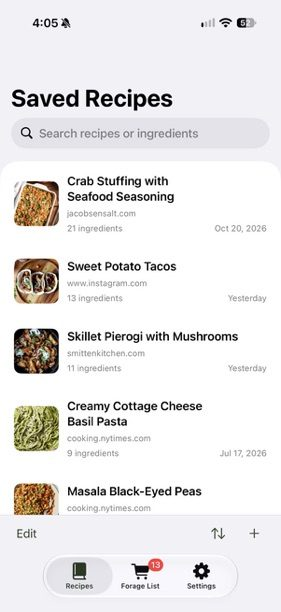
Getting set up
An iPhone or iPad
iOS or iPadOS 17 or later runs the app. iOS 26 or later gets the newest dictation and ringing step timers.
Apple Intelligence (recommended)
Turning spoken or pasted recipes into tidy steps runs on your device with Apple Intelligence. Without it the app still works, but the cleanup is simpler.
Signed in to iCloud
Recipes, photos and your Forage List sync through your own private iCloud. There is no separate account to create.
A Mac (optional)
The same app runs on a Mac with the iPad layout, plus menus and keyboard shortcuts.
Installing with TestFlight
- Install Apple's free TestFlight app from the App Store on your iPhone or iPad.
- Open the invitation from Mark (an email or a link) on that device and tap View in TestFlight or Accept.
- In TestFlight, tap Install next to Forage & Fetch. It then appears on your Home Screen like any other app.
- When a new build is ready, TestFlight lets you know. Tap Update to get it.
If you haven't had an invitation yet, send Mark the email address you use for your Apple Account.
The first time you open the app, it may ask for permission to use the microphone and speech recognition (for dictation), Reminders (if you send items there), notifications and alarms (for step timers), and Photos (when you save a shopping list image or add a recipe photo). Each one is only asked when you first use that feature.
The app at a glance
There are three tabs along the bottom.
- Recipes holds every recipe you've saved. Search at the top, sort by Date Added or Recently Opened, and tap + to add one. Tapping the Recipes tab again takes you back to the list.
- Forage List is your shopping list. Ingredients from any recipe land here, grouped by recipe.
- Settings connects Apple Reminders and chooses your default Reminders list.
The name comes from the idea: you forage for recipes, then fetch what you need.
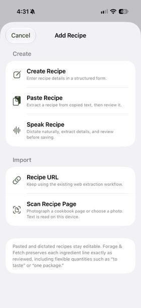
Adding recipes
There are six ways to get a recipe in. Tap + on the Recipes tab to see most of them, or share straight from another app.
Share from Safari or another app
On any recipe website, tap the Share button and choose Forage & Fetch. You'll see "Saved to Forage & Fetch", and the recipe appears when you next open the app.
You may need to tap More in the share sheet once to add Forage & Fetch to your favourites.
Recipe URL
Paste a web address into + › Recipe URL. Works with most recipe sites. If a page has no standard recipe format, the app reads the recipe text on the page instead.
Instagram posts and reels
Share a post or reel to the app, or paste its link. It looks for the creator's own recipe page (the site in the caption, or links in their bio) and falls back to the caption.
If the recipe is only spoken in the video, the import will say so. Video isn't transcribed yet.
Speak Recipe
Tap Start Recording and talk through the recipe the way you'd tell a friend: what goes in, how much, and what to do. Pause any time. Tap Use Transcript and the app writes it up as ingredients and numbered steps.
Paste Recipe
Copy recipe text from anywhere (a note, an email, a message) and paste it in. If the text already has an Instructions heading, the steps are kept word for word.
Scan Recipe Page
Photograph a cookbook or recipe card with Scan Pages, or pick up to four photos you already have. The text is read on your device, and you can check it before it becomes a recipe.
You can also tap Create Recipe to type one in by hand.
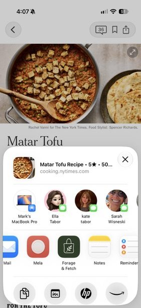
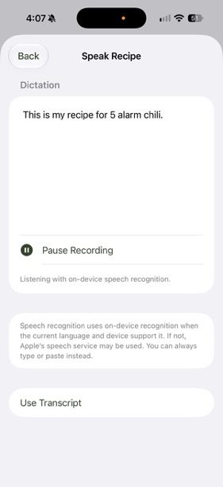
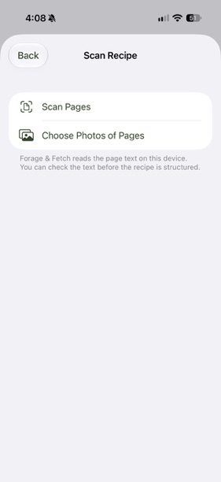
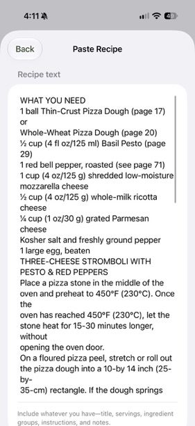
Reviewing a new recipe
Spoken, pasted and scanned recipes open on a Review Recipe screen before they're saved. Everything is editable: title, servings, prep and cook time, ingredients (one per line), steps and notes.
- Check These Ingredients lists anything the app wasn't sure about, such as an ingredient with no amount. Tap one to fix it, or swipe to keep it as is.
- A step starting with "Check:" is one the app couldn't fully match to what you said. Read it and fix or keep it.
- To keep ingredient groups like "For the sauce", put the group name in square brackets on its own line:
[For the sauce].
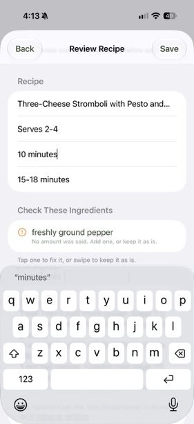
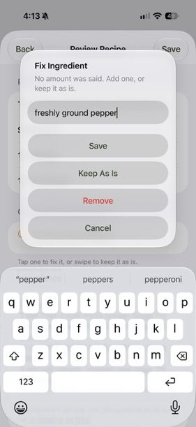
The recipe page
Open any recipe to see its photo, ingredients and then the instructions. The buttons along the top, from left to right:
- Cart adds ingredients to your Forage List. A picker opens with every ingredient selected. Untick what you already have and tap the Add Items to Forage List button, which shows how many you picked.
- Share sends the recipe's link to Messages, Notes or anywhere else.
- Pencil opens the editor for every part of the recipe.
- Pan starts cook mode. On iPad and Mac there's also a Cook button beside Instructions.
The tick boxes next to each ingredient mean "I've gathered this for cooking", and the count shows how many you've gathered. They're just for you while you prep, are kept on that device, and don't change your Forage List.
Further down the page, the Send ingredients section has Add to Reminders, Add to Target and Share Ingredients, for sending a recipe's ingredients straight out without using the Forage List.
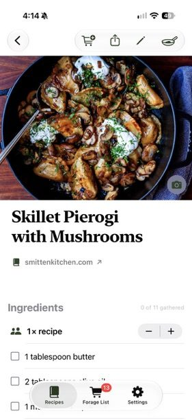
Servings
Use − and + next to "1× recipe" to scale a recipe down or up. Amounts at the start of each ingredient line change. Things like "a pinch" or "to taste", and amounts mentioned inside the steps, stay as written, and lines that can't be scaled say Not scaled.
Photos
Tap the photo (or the space for one) to take a photo, choose one from your library, paste an image link, or go back to the original. On devices with Image Playground you can also Create Image for recipes that don't have one, which is handy for dictated recipes.
Look up an ingredient
Touch and hold any ingredient for Search on Target or Search on Web.
Getting back
On iPhone, swipe from the left edge or tap the back arrow to return to your recipes.
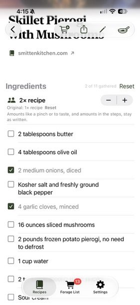
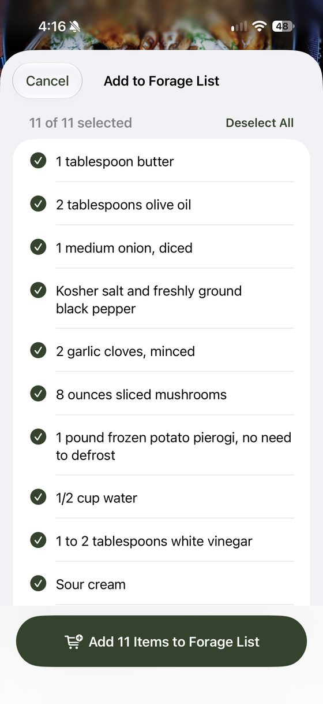
Cook mode
Cook mode shows one step at a time in large type, with a progress bar along the top. Tap Next or Back, or swipe, to move between steps. The list button at the top right shows all the ingredients.
- For this step lists just the ingredients that step uses, so you don't have to scroll back.
- When a step mentions a time ("simmer for 20 minutes"), a timer button appears under the step (for example 5 min). Tap it to start. On iOS 26 and later the timer rings like an alarm, even on silent. Earlier versions use a notification.
- A Live Activity on the Lock Screen and Dynamic Island shows which step you're on and any running timer.
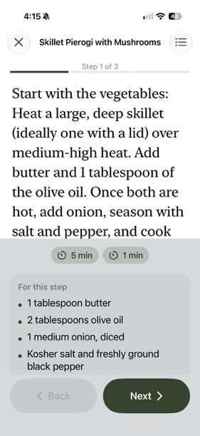
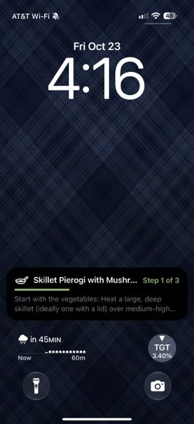
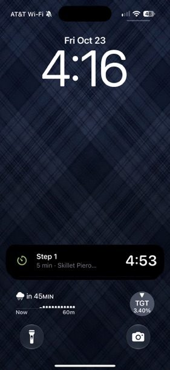
The Forage List
Your shopping list. Each item shows the recipe it came from, and the badge on the tab shows how many items are on it. If an ingredient is already on the list, the picker tells you.
- Tick items as you shop. Remove one by swiping it, or clear everything you've ticked with the trash button.
- The buttons at the bottom of the list work on the items you've ticked, and show how many that is.
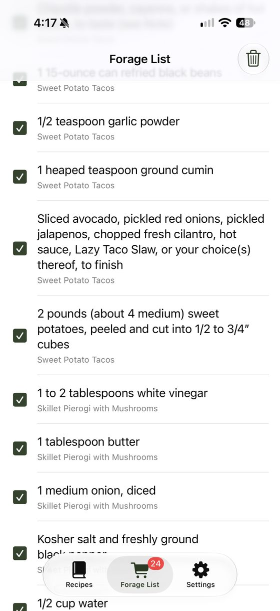
Send to Apple Reminders
- The first time, go to Settings, tap Connect Reminders and allow access. Then choose a Default Reminders List, such as your grocery list.
- On the Forage List, tick the items you want to send.
- Check the Reminders List at the bottom. You can switch to a different list just for this send.
- Tap Add 2 to Reminders (the number matches what you ticked).
- The app then asks whether to remove those items from the Forage List or keep them. Either way they're now in Reminders, and they sync to your other Apple devices and anyone you share that list with.
Send to Target
Add to Target opens a picker, then saves the items you choose as an image in Photos. In the Target app, use its add-from-photo option to bring the items into your Target list. Long lists are split into several images.
Share
Share sends the ticked items as text to Messages, Notes or anywhere else.
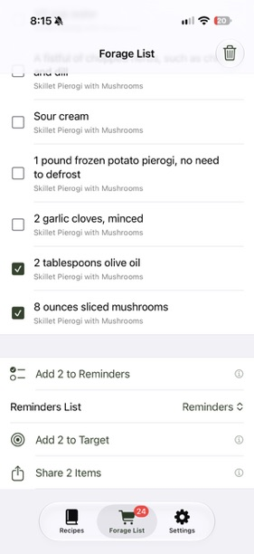
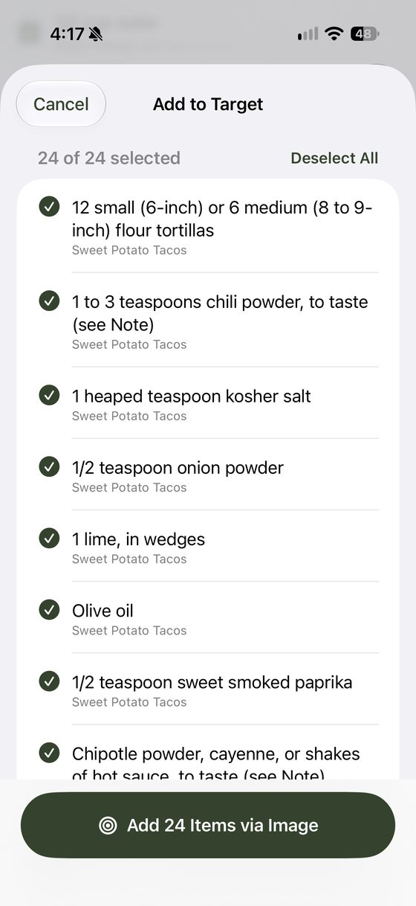
Siri, Spotlight and widgets
Your recipes show up in Spotlight search, so you can swipe down on the Home Screen and type a recipe name. You can also ask Siri:
- "Open lentil stew in Forage & Fetch"
- "Add this recipe to my Forage List in Forage & Fetch"
- "What's on my Forage & Fetch list"
- "Start cook mode in Forage & Fetch"
The same actions are in the Shortcuts app, so you can assign one to the Action Button in Settings.
Forage List widget
Add the Forage & Fetch widget (small, medium or large) to your Home Screen to see what's left to buy. Tap an item in the widget to tick it off. Ticks stay in step with the app.
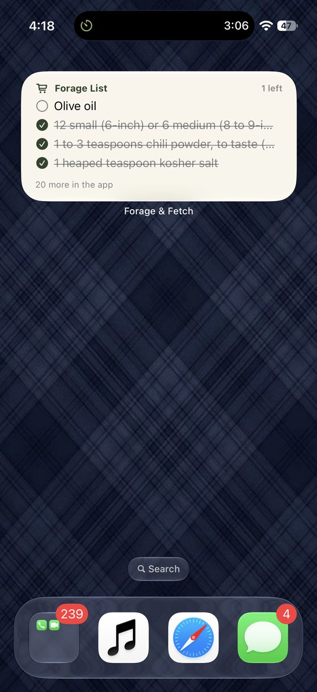
iPad, Mac and foldables
iPad. The tabs move to the top, the recipe list sits beside the open recipe, and wide recipe pages show ingredients and steps side by side. Cook mode puts ingredients in a side panel in landscape.
Mac. The Mac app looks like the iPad app and adds menus and keyboard shortcuts: ⌘N for a new recipe, ⌘, for Settings, arrow keys to move between steps in cook mode. On the Mac, Cook goes straight to cook mode, and timers use a regular notification.
Foldable iPhone. When unfolded, the list and the recipe (or the Forage List) can sit side by side.
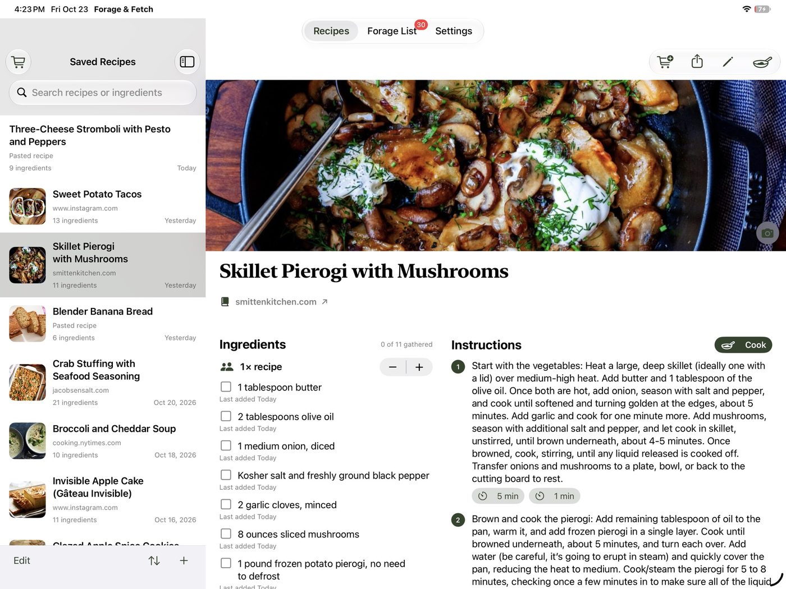
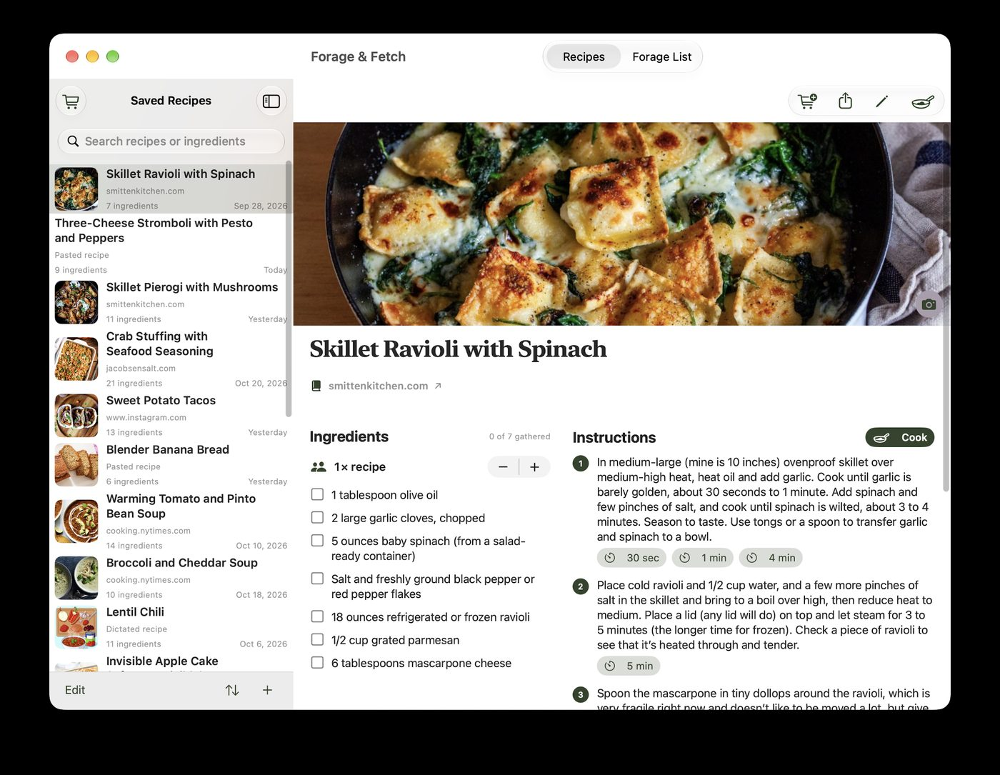
Sync and privacy
Recipes, photos you add and your Forage List sync through your own private iCloud, so the same list is on your iPhone, iPad and Mac. There's no Forage & Fetch account, no analytics and no ad tracking. Turning dictation and pasted text into recipes happens on your device with Apple Intelligence. Nothing is sent to a paid AI service.
Sync happens on its own. If something looks out of date, close and reopen the app; on the Mac there's also a Sync Now menu command.
Known limitations
- Instagram reels whose recipe is only spoken in the video can't be imported yet. Posts with the recipe in the caption, or a link to the creator's recipe page, work best.
- Some websites block apps from reading them, or put the recipe behind a login. Paste Recipe is the fallback.
- Dictation and scans can mishear or misread. Always glance at the Review screen, especially lines marked "Check:".
- Scaling servings changes the recipe page only. Ingredients you add to the Forage List use the original amounts.
- "Ingredients gathered" ticks on a recipe page stay on that one device.
- Generated recipe images need a device with Image Playground. On iOS 27 you tap Create Image yourself; it doesn't happen automatically.
- The "Share to HomeView" setting is an experiment for one specific home setup. Leave it off.
What to try
If you only have a few minutes, these are the things we most want to hear about. Tick them off as you go (ticks are saved only in your browser).
Sending feedback
Use whichever is easiest for you:
- From TestFlight. Take a screenshot while using the app, tap Share Beta Feedback, add a note and send. You can also open TestFlight, choose Forage & Fetch and tap Send Beta Feedback. If the app crashes, TestFlight will offer to send a report. Please say yes.
- By email or chat. Message Mark directly, the same way you usually reach him.
The most useful reports include the recipe link or what you said, what you expected, what you got, and a screenshot. If an import goes wrong, keep the recipe in the app rather than deleting it so we can look at it together.